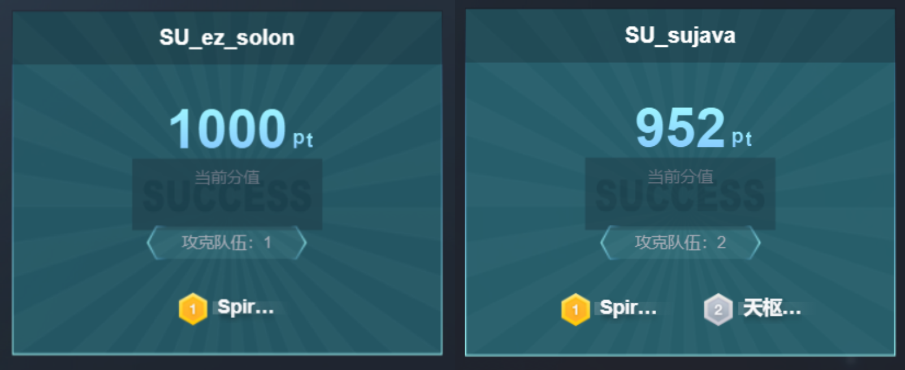
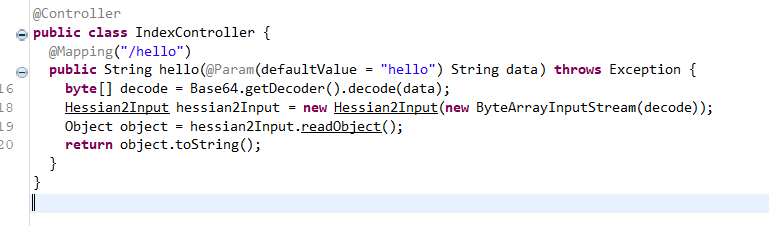
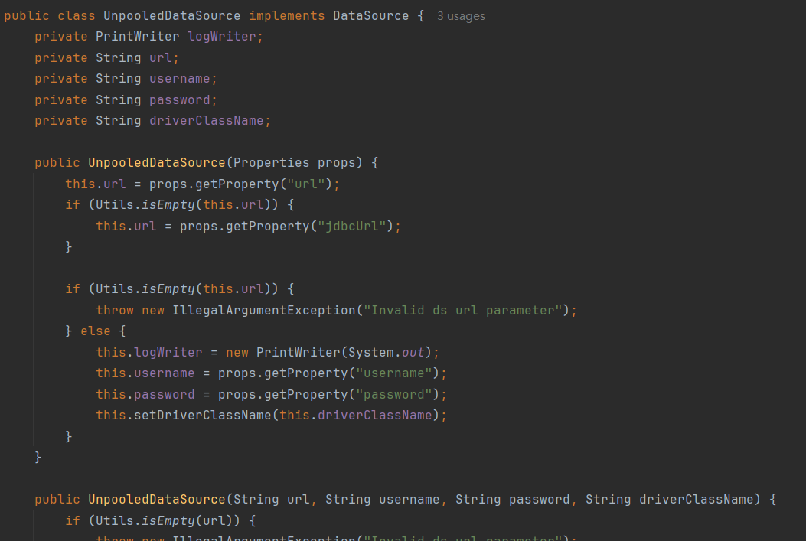
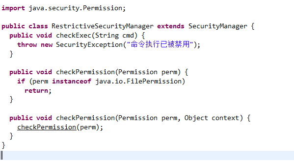
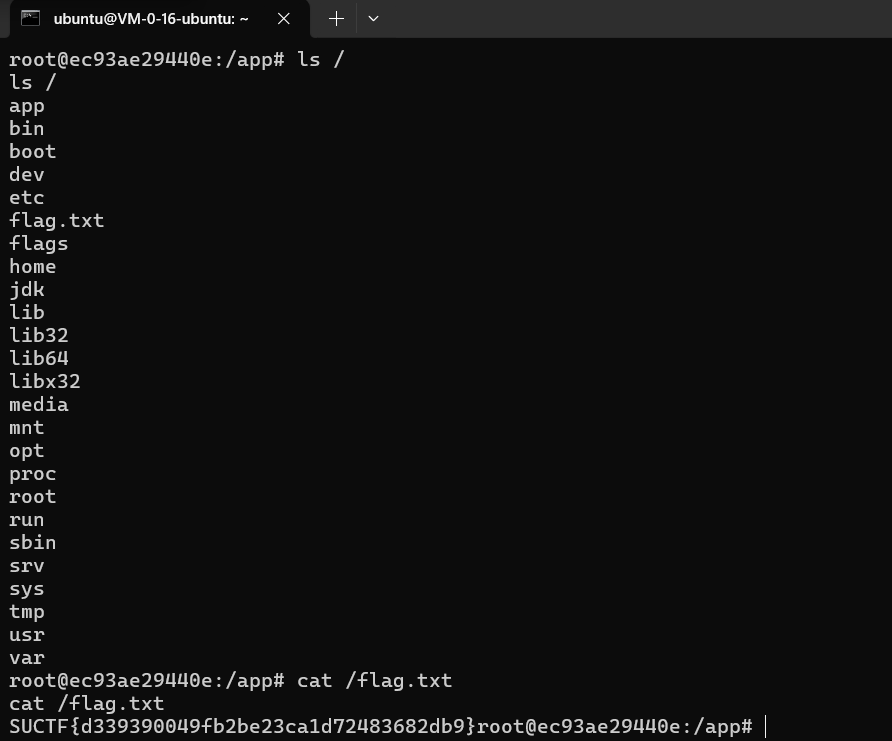
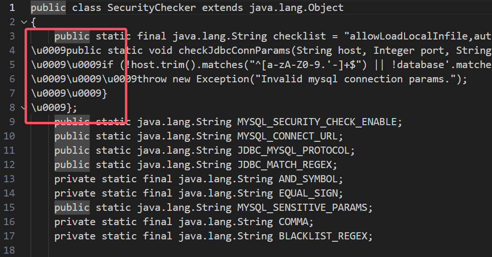
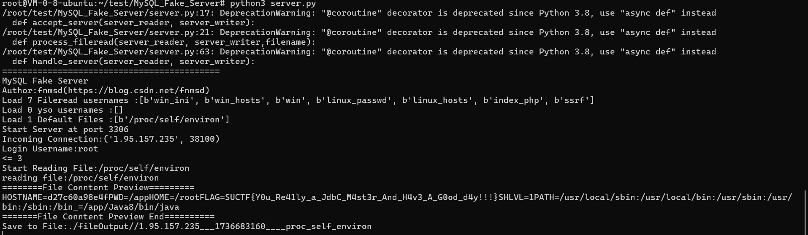

放寒假闲着没事打了一𝒔⑶𝐯ｅｎ∙𝒔𝘪𝘵℮场XCTF分站赛，𝘴𝟯𝐯𝐞𝘯.𝘀iｔ𝐞没想到直接拿了两个一血 🩸

1. ez_solon
1.1 反序列化Gadget构造

Hessian 反序列化，通过 readObject 反序列化 Object 后调用 Object.toString
依赖使用 sofa-ꜱ⑶ⅴe𝐧．𝘀𝘪ｔ𝐞hessian：
<dependency>
<groupId>com.alipay.sofa</groupId>
<artifactId>hessian</artifactId>
<version>3.5.5</version>
</dependency>该版本的黑名单如下（通用ѕ³ⅴℯｎ․𝐬𝐢𝒕𝐞链基本上都不能用）
serialize.blacklist
aj.org.objectweb.asm.
br.com.anteros.
bsh.
ch.qos.logback.
clojure.
com.alibaba.citrus.springext.support.parser.
com.alibaba.citrus.springext.util.SpringExtUtil.
com.alibaba.druid.pool.
com.alibaba.druid.stat.JdbcDataSourceStat
com.alibaba.fastjson.annotation.
com.alibaba.hotcode.internal.org.apache.commons.collections.functors.
com.alipay.custrelation.service.model.redress.
com.alipay.oceanbase.obproxy.druid.pool.
com.caucho.hessian.test.TestCons
com.caucho.naming.Qname
com.ibatis.
com.ibm.jtc.jax.xml.bind.v2.runtime.unmarshaller.
com.ibm.xltxe.rnm1.xtq.bcel.util.
com.mchange.
com.mysql.cj.jdbc.admin.
com.mysql.cj.jdbc.MysqlConnectionPoolDataSource
com.mysql.cj.jdbc.MysqlDataSource
com.mysql.cj.jdbc.MysqlXADataSource
com.mysql.cj.log.
com.mysql.jdbc.util.
com.p6spy.engine.
com.rometools.rome.feed.
com.sun.
com.taobao.eagleeye.wrapper.
com.taobao.vipserver.commons.collections.functors.
com.zaxxer.hikari.
flex.messaging.util.concurrent.
groovy.lang.
java.awt.
java.beans.
java.net.InetAddress
java.net.Socket
java.net.URL
java.rmi.
java.security.
java.util.EventListener
java.util.jar.
java.util.logging.
java.util.prefs.
java.util.ServiceLoader
java.util.StringTokenizer
javassist.
javax.activation.
javax.imageio.
javax.management.
javax.media.jai.remote.
javax.naming.
javax.net.
javax.print.
javax.script.
javax.sound.
javax.swing.
javax.tools.
javax.xml
jdk.internal.
jodd.db.connection.
junit.
net.bytebuddy.dynamic.loading.
net.sf.cglib.
net.sf.ehcache.hibernate.
net.sf.ehcache.transaction.manager.
ognl.
oracle.jdbc.
oracle.jms.aq.
oracle.net.
org.aoju.bus.proxy.provider.
org.apache.activemq.ActiveMQConnectionFactory
org.apache.activemq.ActiveMQXAConnectionFactory
org.apache.activemq.jms.pool.
org.apache.activemq.pool.
org.apache.activemq.spring.
org.apache.aries.transaction.
org.apache.axis2.jaxws.spi.handler.
org.apache.axis2.transport.jms.
org.apache.bcel.
org.apache.carbondata.core.scan.expression.
org.apache.catalina.
org.apache.cocoon.
org.apache.commons.beanutils.
org.apache.commons.codec.
org.apache.commons.collections.comparators.
org.apache.commons.collections.functors.
org.apache.commons.collections.Transformer
org.apache.commons.collections4.comparators.
org.apache.commons.collections4.functors.
org.apache.commons.collections4.Transformer
org.apache.commons.configuration.
org.apache.commons.configuration2.
org.apache.commons.dbcp.
org.apache.commons.fileupload.
org.apache.commons.jelly.
org.apache.commons.logging.
org.apache.commons.proxy.
org.apache.cxf.jaxrs.provider.
org.apache.hadoop.shaded.com.zaxxer.hikari.
org.apache.http.auth.
org.apache.http.conn.
org.apache.http.cookie.
org.apache.http.impl.
org.apache.ibatis.datasource.
org.apache.ibatis.executor.
org.apache.ibatis.javassist.
org.apache.ibatis.ognl.
org.apache.ibatis.parsing.
org.apache.ibatis.reflection.
org.apache.ibatis.scripting.
org.apache.ignite.cache.
org.apache.ignite.cache.jta.
org.apache.log.output.db.
org.apache.log4j.
org.apache.logging.
org.apache.myfaces.context.servlet.
org.apache.myfaces.view.facelets.el.
org.apache.openjpa.ee.
org.apache.shiro.
org.apache.tomcat.
org.apache.velocity.
org.apache.wicket.util.
org.apache.xalan.
org.apache.xbean.
org.apache.xpath.
org.apache.zookeeper.
org.aspectj.
org.codehaus.groovy.runtime.
org.codehaus.jackson.
org.datanucleus.store.rdbms.datasource.dbcp.datasources.
org.dom4j.
org.eclipse.jetty.
org.geotools.filter.
org.h2.jdbcx.
org.h2.server.
org.h2.value.
org.hibernate.
org.javasimon.
org.jaxen.
org.jboss.
org.jdom.
org.jdom2.transform.
org.junit.
org.logicalcobwebs.
org.mockito.
org.mortbay.jetty.
org.mortbay.log.
org.mozilla.javascript.
org.objectweb.asm.
org.osjava.sj.
org.python.core.
org.quartz.
org.slf4j.
org.springframework.aop.aspectj.autoproxy.AspectJAwareAdvisorAutoProxyCreator$PartiallyComparableAdvisorHolder
org.springframework.aop.support.DefaultBeanFactoryPointcutAdvisor
org.springframework.beans.factory.BeanFactory
org.springframework.beans.factory.config.PropertyPathFactoryBean
org.springframework.beans.factory.support.DefaultListableBeanFactory
org.springframework.jndi.support.SimpleJndiBeanFactory
org.springframework.orm.jpa.AbstractEntityManagerFactoryBean
org.springframework.transaction.jta.JtaTransactionManager
org.springframework.jndi.JndiObjectTargetSource
org.springframework.beans.factory.config.MethodInvokingFactoryBean
org.thymeleaf.
org.yaml.snakeyaml.tokens.
pstore.shaded.org.apache.commons.collections.
sun.print.
sun.rmi.server.
sun.rmi.transport.
weblogic.ejb20.internal.
weblogic.jms.common.注意到存在依赖：
<dependency>
<groupId>com.alibaba</groupId>
<artifactId>fastjson</artifactId>
<version>1.2.83</version>
</dependency>
<dependency>
<groupId>com.h2database</groupId>
<artifactId>h2</artifactId>
<version>2.2.224</version>
</dependency>h2 应当作为高版本JDK或黑名单ѕ𝟯ⅴ𝐞𝒏.ꜱ𝘪𝒕e状态下的常用 sink 出现
初步考虑使用 dataSource （JsonObject toString 触发任意 𝘀⑶ⅴ𝘦ｎ．𝘀𝘪𝘵egetter 来 getConnection）
但是 JdbcDataSource 属于 org.h2.jdbcx ѕ³𝒗ℯ𝒏∙𝒔ｉ𝘵𝘦软件包中 存在黑名单无法被序列化和反序列化
考虑到在 solon （org.noear.𝐬3𝐯𝘦𝒏．ꜱｉ𝐭esolon）中寻找可用的 dataSource，注意到存在 UnpooledDataSource 类满足条件可用：

因此构造Gad𝒔𝟯𝘷e𝘯∙𝐬ｉ𝘵𝐞get完成：
JsonObject.toString()->UnpooledDataSource.getConnection()是一个很简短的链
1.2 SecurityManager绕过
还需要绕过 Sec𝘴3v𝐞ｎ．𝐬ｉｔ𝐞urityManager

由于没有限制重定义，直接在h2的sink中使用Java代码 𝘴𝟯𝐯𝐞𝘯•𝐬𝐢𝘵𝘦System.setSecurityManager(null); 将其置空即可正常反弹 shell
flag在/flag.txt中

2. ezjava
2.1 混淆字节码恢复
附件的Class经过了特殊处理，𝘴𝟯v𝐞n•𝘴ｉｔ℮如果直接放入IDEA反编译器中会显示错误的源码，错误的源码waf过滤极其严格，无法进行绕过
//
// Source code recreated from a .class file by IntelliJ IDEA
// (powered by FernFlower decompiler)
//
package com.pho3n1x.sujava.security;
import java.util.HashMap;
import java.util.Map;
import java.util.stream.Collectors;
import org.apache.commons.lang3.StringUtils;
public class SecurityChecker {
public static final String checklist = "allowLoadLocalInfile,autoDeserialize,allowLocalInfile,allowUrlInLocalInfile,#";
public static void checkJdbcConnParams(String host, Integer port, String username, String password, String database, Map<String, Object> extraParams) throws Exception {
if (!host.trim().matches("^[a-zA-Z0-9.-]+$") || !database.matches("^[a-zA-Z0-9_]+$") || parseParamsMapToMysqlParamUrl(extraParams).matches(".*(allowLoadLocalInfile|autoDeserialize|allowLocalInfile|allowUrlInLocalInfile|#|%).*")) {
throw new Exception("Invalid mysql connection params.");
}
};
public SecurityChecker() {
}
private static Map<String, Object> parseMysqlUrlParamsToMap(String var0) {
if (StringUtils.isBlank(var0)) {
return new HashMap();
} else {
String[] var1 = var0.split("&");
HashMap var2 = new HashMap(var1.length);
String[] var3 = var1;
int var4 = var1.length;
for(int var5 = 0; var5 < var4; ++var5) {
String var6 = var3[var5];
String[] var7 = var6.split("=");
if (var7.length == 2) {
var2.put(var7[0], var7[1]);
}
}
return var2;
}
}
public static String parseParamsMapToMysqlParamUrl(Map<String, Object> var0) {
return var0 != null && !var0.isEmpty() ? (String)var0.entrySet().stream().map((var0x) -> {
return String.join("=", (CharSequence)var0x.getKey(), String.valueOf(var0x.getValue()));
}).collect(Collectors.joining("&")) : "";
}
public static void appendMysqlForceParams(Map<String, Object> var0) {
var0.putAll(parseMysqlUrlParamsToMap("allowLoadLocalInfile=false&autoDeserialize=false&allowLocalInfile=false&allowUrlInLocalInfile=false"));
}
}
根据提示源码存在混淆，使用静态分析框架将字节码转换为IR，可以发现插入了不可见字符：

不可见字符将直接导致该类失效，ѕ𝟯v𝐞𝒏·𝘴ｉｔ𝐞发现jadx可以正常读取混淆后的字节码
package com.pho3n1x.sujava.security;
import java.io.UnsupportedEncodingException;
import java.net.URLDecoder;
import java.util.HashMap;
import java.util.Iterator;
import java.util.Map;
import java.util.regex.Matcher;
import java.util.regex.Pattern;
import java.util.stream.Collectors;
import org.apache.commons.lang3.StringUtils;
/* loaded from: SecurityChecker.class */
public class SecurityChecker {
/* renamed from: checklist = "allowLoadLocalInfile,autoDeserialize,allowLocalInfile,allowUrlInLocalInfile,#";
public static void checkJdbcConnParams(String host, Integer port, String username, String password, String database, Map<String, Object> extraParams) throws Exception {
if (!host.trim().matches("^[a-zA-Z0-9.-]+$") || !database.matches("^[a-zA-Z0-9_]+$") || parseParamsMapToMysqlParamUrl(extraParams).matches(".*(allowLoadLocalInfile|autoDeserialize|allowLocalInfile|allowUrlInLocalInfile|#|%).*")) {
throw new Exception("Invalid mysql connection params.");
}
} reason: not valid java name and contains not printable characters */
public static final String f0x2356168a = null;
private static final String AND_SYMBOL = "&";
private static final String EQUAL_SIGN = "=";
private static final String COMMA = ",";
private static final String BLACKLIST_REGEX = "autodeserialize|allowloadlocalinfile|allowurlinlocalinfile|allowloadlocalinfileinpath";
public static String MYSQL_SECURITY_CHECK_ENABLE = "true";
public static String MYSQL_CONNECT_URL = "jdbc:mysql://%s:%s/%s";
public static String JDBC_MYSQL_PROTOCOL = "jdbc:mysql";
public static String JDBC_MATCH_REGEX = "(?i)jdbc:(?i)(mysql)://([^:]+)(:[0-9]+)?(/[a-zA-Z0-9_-]*[\\.\\-]?)?";
public static String MYSQL_SENSITIVE_PARAMS = "allowLoadLocalInfile,autoDeserialize,allowLocalInfile,allowUrlInLocalInfile,#";
public static void checkJdbcConnParams(String str, Integer num, String str2, String str3, String str4, Map<String, Object> map) throws Exception {
if (Boolean.valueOf(MYSQL_SECURITY_CHECK_ENABLE).booleanValue()) {
if (StringUtils.isAnyBlank(new CharSequence[]{str, str2})) {
throw new Exception("Invalid mysql connection params.");
}
String format = String.format(MYSQL_CONNECT_URL, str.trim(), num, str4.trim());
checkHost(str.trim());
checkUrl(format);
checkParams(map);
checkUrlIsSafe(format);
}
}
public static void checkHost(String str) throws Exception {
if (str == null) {
return;
}
if (str.startsWith("(") || str.endsWith(")")) {
throw new Exception("Invalid host");
}
}
public static void checkUrl(String str) throws Exception {
if ((str == null || str.toLowerCase().startsWith(JDBC_MYSQL_PROTOCOL)) && !Pattern.compile(JDBC_MATCH_REGEX).matcher(str).matches()) {
throw new Exception();
}
}
private static Map<String, Object> parseMysqlUrlParamsToMap(String str) {
if (StringUtils.isBlank(str)) {
return new HashMap();
}
String[] split = str.split(AND_SYMBOL);
HashMap hashMap = new HashMap(split.length);
for (String str2 : split) {
String[] split2 = str2.split(EQUAL_SIGN);
if (split2.length == 2) {
hashMap.put(split2[0], split2[1]);
}
}
return hashMap;
}
public static String parseParamsMapToMysqlParamUrl(Map<String, Object> map) {
return (map == null || map.isEmpty()) ? "" : (String) map.entrySet().stream().map(entry -> {
return String.join(EQUAL_SIGN, (CharSequence) entry.getKey(), String.valueOf(entry.getValue()));
}).collect(Collectors.joining(AND_SYMBOL));
}
private static void checkParams(Map<String, Object> map) throws Exception {
if (map == null || map.isEmpty()) {
return;
}
try {
Map<String, Object> parseMysqlUrlParamsToMap = parseMysqlUrlParamsToMap(URLDecoder.decode(parseParamsMapToMysqlParamUrl(map), "UTF-8"));
map.clear();
map.putAll(parseMysqlUrlParamsToMap);
Iterator<Map.Entry<String, Object>> it = map.entrySet().iterator();
while (it.hasNext()) {
Map.Entry<String, Object> next = it.next();
String key = next.getKey();
Object value = next.getValue();
if (StringUtils.isBlank(key) || value == null || StringUtils.isBlank(value.toString())) {
it.remove();
} else if (isNotSecurity(key, value.toString())) {
throw new Exception("Invalid mysql connection parameters: " + parseParamsMapToMysqlParamUrl(map));
}
}
} catch (UnsupportedEncodingException e) {
throw new Exception("mysql connection cul decode error: " + e);
}
}
private static boolean isNotSecurity(String str, String str2) {
boolean z = true;
String str3 = MYSQL_SENSITIVE_PARAMS;
if (StringUtils.isBlank(str3)) {
return false;
}
String[] split = str3.split(COMMA);
int length = split.length;
int i = 0;
while (true) {
if (i >= length) {
break;
} else if (isNotSecurity(str, str2, split[i])) {
z = false;
break;
} else {
i++;
}
}
return !z;
}
private static boolean isNotSecurity(String str, String str2, String str3) {
return str.toLowerCase().contains(str3.toLowerCase()) || str2.toLowerCase().contains(str3.toLowerCase());
}
public static void checkUrlIsSafe(String str) throws Exception {
try {
Matcher matcher = Pattern.compile(BLACKLIST_REGEX).matcher(str.toLowerCase());
StringBuilder sb = new StringBuilder();
while (matcher.find()) {
if (sb.length() > 0) {
sb.append(", ");
}
sb.append(matcher.group());
}
if (sb.length() > 0) {
throw new Exception("url contains blacklisted characters: " + ((Object) sb));
}
} catch (Exception e) {
throw new Exception("error occurred during url security check: " + e);
}
}
public static void appendMysqlForceParams(Map<String, Object> map) {
map.putAll(parseMysqlUrlParamsToMap("allowLoadLocalInfile=false&autoDeserialize=false&allowLocalInfile=false&allowUrlInLocalInfile=false"));
}
}提示了 reason: not valid java name 𝐬³𝘷𝘦𝘯·𝒔𝐢t𝘦and contains not printable characters
2.2 绕过WAF逻辑
检查逻辑后可以发现 host 字段的正则 Reg 可以进行注入：
"(?i)jdbc:(?i)(mysql)://([^:]+)(:[0-9]+)?(/[a-zA-Z0-9_-]*[\\.\\-]?)?";([^:]+)可以一直匹配所有𝒔⑶v𝘦𝘯•𝘴ⅈ𝐭e非冒号字符串- 通过 url 𝒔3𝘷𝐞𝒏․𝒔ｉｔ𝐞全字符编码可以绕过关键词匹配waf
- 可以使用 # 𝘀³𝘷ｅ𝐧.𝒔𝘪𝐭ｅ来忽略最后插入的安全策略
按照上述描述将下列字段注入到 host 中，并使用 𝘀⑶v𝘦ｎ.𝘴ｉtｅFake_MySQL_Server 读取客户端文件即可
allowLoadLocalInfile=true&allowUrlInLocalInfile=true&allowLoadLocalInfileInPath=/&maxAllowedPacket=655360flag 在环境变量中：
